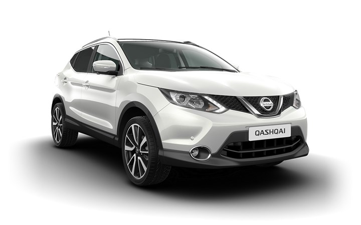
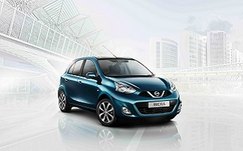
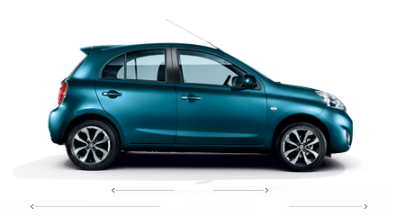

NISSAN Srbija

QASHQAI NOVE GENERACIJE
Novi Nissan Qashqai dostupan je u više paketa opreme i nekoliko vrsta motora. Izaberite model kako biste videli detaljne specifikacije, a upoređivanjem pronađite savršen Qashqai za sebe.

NOVI NISSAN MICRA
Nova Nissan Micra dostupna je s najnovijim navigacionim sistemom, Nissan Connect s kojim ćete biti maksimalno pokretljivi. Osim satelitskog navođenja, tu su i Bluetooth, USB i mogućnost povezivanja iPoda. Veći, 15-cm ekran osetljiv na dodir znatno olakšava snalaženje među telefonskim, muzičkim i voznim informacijama.
